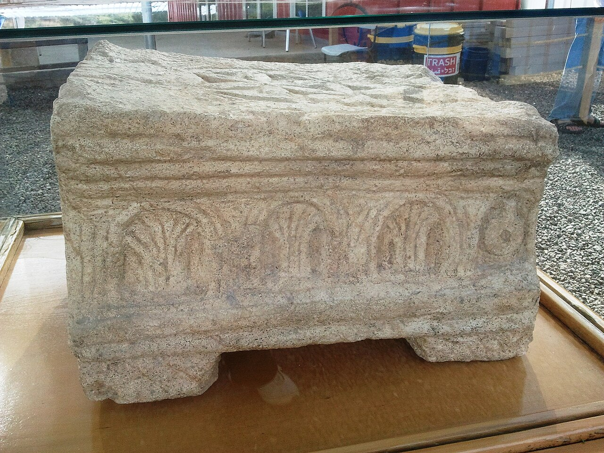

Magdala Stone

A carved limestone block found in 2009 in the synagogue at Magdala, the hometown of Mary Magdalene. Its faces show the seven-branched menorah, a chariot-like structure, and rosettes — the earliest known stone depiction of the Second Temple and its furnishings, carved while the Temple still stood.
Biblical Significance
Jesus taught in synagogues throughout Galilee, and here is one of them, with its worship carved in stone: the menorah, the Temple it pointed to, the faith of a fishing town. The stone lets us see the world Jesus preached in — not a backdrop, but a place with its own synagogue, its own hopes, and its own people.
Interpretations
Scholars agree the stone is a first-century synagogue carving with Temple imagery; debate concerns the details of its iconography — which Temple vessels each face shows.